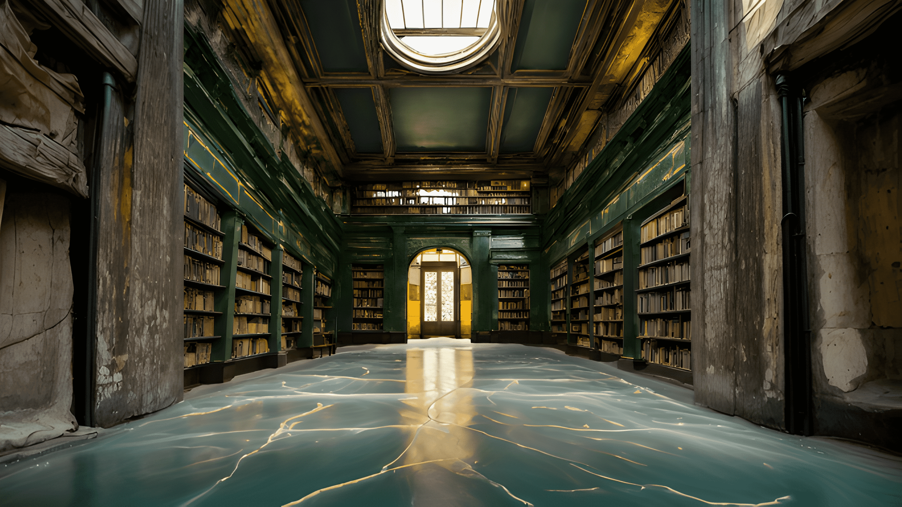

THE HALL
Welcome to the Great Library. I am your host, Arvan Illshari of the ninth sun. Fancy magical name, I know. I am the keeper of the great library that hosts every story that has ever been written or ever could be written. Unlike most fictional ideas conjured by men, the ancients know that reality is too unpredictable hence why the Khaos section of the library exists to keep track of possible future events. The library has always been the greatest kept secret of Reality. Forget sorcerers, even Tomeseekers haven’t been able to find us. So please do not try, lest you face the cosmic consequences. Now come, rest your feet, and feast your eyes. Congratulations are in order because you get a sneak peek at stories that are being created and forming realities.
FROM ARCHIVE:
XARA'S LOG 00
The Great Library is a point in space time that archives and keeps track of timelines and alternate realities. Originally, created by the first Tomeseeker, the library was lost in an accident and has since, been the only purpose for the Tomeseekers, who seek to regain control of it. The Library contains the colllective information of almost every reality but still keeps collecting information thanks to its caretaker, Arvan Illshari. How he came to find it is a mystery that he keeps heavily shrouded. However Arvan js actually quite open to visitors who find him almost always by accident. There are stories of him wielding weapons of great power so.I know that no one with malicious intent can ever find their way into the library. If they do, God help them. If what I suspect is true, Arvan boasts strength equal to a Tomeseeker. I think with all that knowledge, he could even hold his own against one. The Library is real. All the stories are true. What my Grandmother told me about it has to be true. I will find the library, even if it takes me my whole life. I have to-
ERROR: END OF RECORDING
As you've guessed by now, yes the library is real. And yes, I did meet Xara's Grandmother eons ago. I've included the story in the archives for you, in case you are interested. Now as part of your tour, here are some of the weapons I use in defence of the library. I don't have to use them often because the library keeps drifting and thus does not attract real monsters. Not most of the time, at least.
Xuren
Xuren which translates from Aldrage and is short for Wielder of Storms. The Aldragis actually loved storms and the destruction they wrought. They saw a sort of beauty in it. A purity. The sword is the only remnant of their civilization. Xuren is an elementally charged blade. Specifically air. My mind controls its movement when not in my hand thus negating the need for ranged weapons. It can also create cyclones from nothing because of the sheer power infused in it.

Skaårdak
Skaårdak is a shield. When inactive, it rests as a bracelet on my hand. Skaårdak can protect its wielder from a nuclear explosion and can expand up to 300 times its size for five minutes in human terms. Forged by Hexcists on Krysta, it serves as the height of what technology can become when fused with magic.